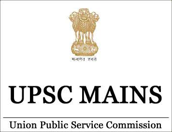

The Main Examination is the most crucial stage of the Civil Services Examination. Unlike the Preliminary Examination, it evaluates your analytical thinking, conceptual clarity, writing skills, and ability to present balanced opinions on national and international issues.

The UPSC Main Examination is the second stage of the Civil Services Examination conducted by the Union Public Service Commission (UPSC). Candidates who qualify in the Preliminary Examination become eligible to appear for the Mains Examination.
Unlike the Preliminary Examination, which is objective in nature, the Main Examination consists of descriptive papers. It evaluates the candidate's knowledge, analytical ability, writing skills, ethical understanding, and decision-making capability.
The marks obtained in the Main Examination play a significant role in determining the final merit list along with the Personality Test.
The Main Examination consists of nine descriptive papers. Two language papers are qualifying in nature, while the remaining papers contribute to the final merit ranking.
| Paper | Subject | Marks | Nature |
|---|---|---|---|
| Paper A | Indian Language | 300 | Qualifying |
| Paper B | English | 300 | Qualifying |
| Paper I | Essay | 250 | Merit |
| Paper II | General Studies I | 250 | Merit |
| Paper III | General Studies II | 250 | Merit |
| Paper IV | General Studies III | 250 | Merit |
| Paper V | General Studies IV | 250 | Merit |
| Paper VI | Optional Subject I | 250 | Merit |
| Paper VII | Optional Subject II | 250 | Merit |
The General Studies papers assess a candidate's comprehensive understanding of governance, history, society, economy, ethics, science, technology, internal security, and international relations. These papers require analytical thinking rather than memorization.
GS Paper-I mainly focuses on Indian Heritage and Culture, Ancient, Medieval and Modern History, World History, Indian Society, Physical Geography, Indian Geography and World Geography.
GS Paper-II deals with the Constitution of India, Governance, Parliament, Judiciary, Public Administration, Social Justice, Welfare Schemes and International Relations.
GS Paper-III focuses on Economic Development, Agriculture, Science & Technology, Environment, Biodiversity, Disaster Management and Internal Security.
GS Paper-IV evaluates Ethics, Integrity and Aptitude. Candidates are expected to demonstrate ethical reasoning, decision-making skills and values through descriptive answers and case studies.
The Essay Paper evaluates a candidate's ability to organize ideas logically and express opinions in a clear, coherent and balanced manner. Strong essays demonstrate conceptual clarity, critical thinking and relevant examples.
Candidates are required to choose one optional subject from the list prescribed by UPSC. The optional subject consists of two papers, each carrying 250 marks.
The choice of an optional subject should depend upon your interest, academic background, availability of study materials, previous performance trends and guidance availability.
Answer writing is one of the most important aspects of the UPSC Main Examination. Even if you possess excellent knowledge, presenting your ideas in a structured, concise and analytical manner is essential for scoring high marks.
Carefully identify directive words such as Discuss, Examine, Evaluate, Analyze, Critically Examine, Comment or Justify before writing your answer.
Spend a minute preparing the flow of your answer. Divide it into Introduction, Body and Conclusion.
Begin with a definition, constitutional provision, current example, committee recommendation or factual statement.
Use headings, sub-headings, bullet points, diagrams, flowcharts and maps wherever appropriate.
Finish every answer with a constructive and solution-oriented conclusion aligned with constitutional values.
The following roadmap provides a structured approach for preparing effectively for the UPSC Main Examination.
Write at least two descriptive answers every day.
Practice previous year questions before joining test series.
Revise short notes every weekend.
Improve presentation using headings, diagrams and flowcharts.
"UPSC Mains rewards not only knowledge but also clarity of thought, consistency in preparation and excellence in answer presentation."
Strengthen your preparation by exploring answer writing strategies, previous year questions and study materials.